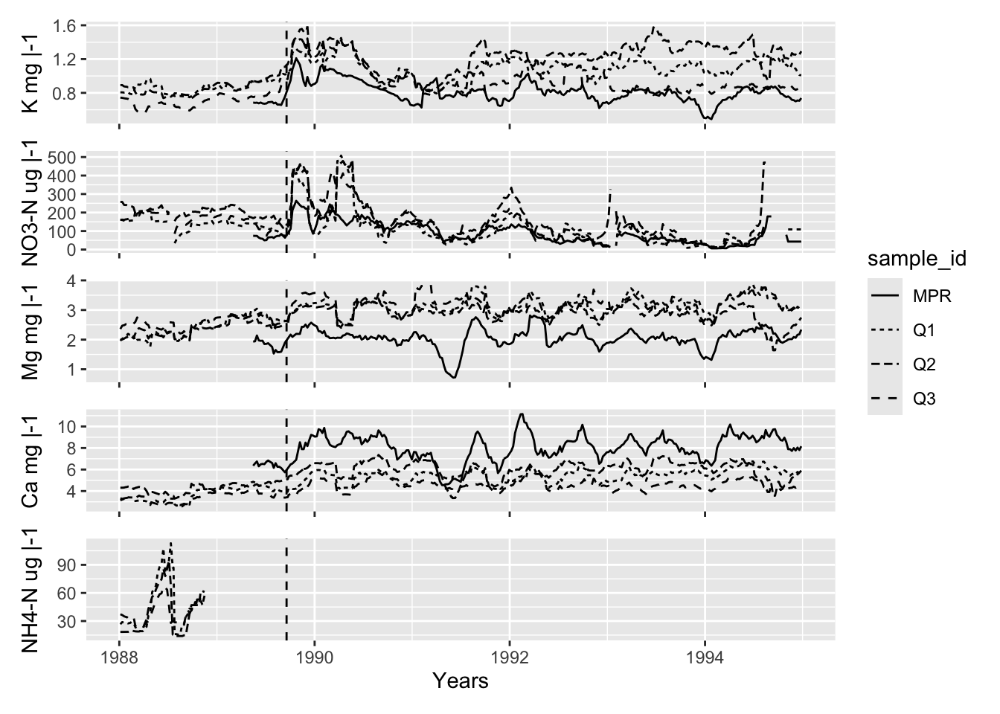
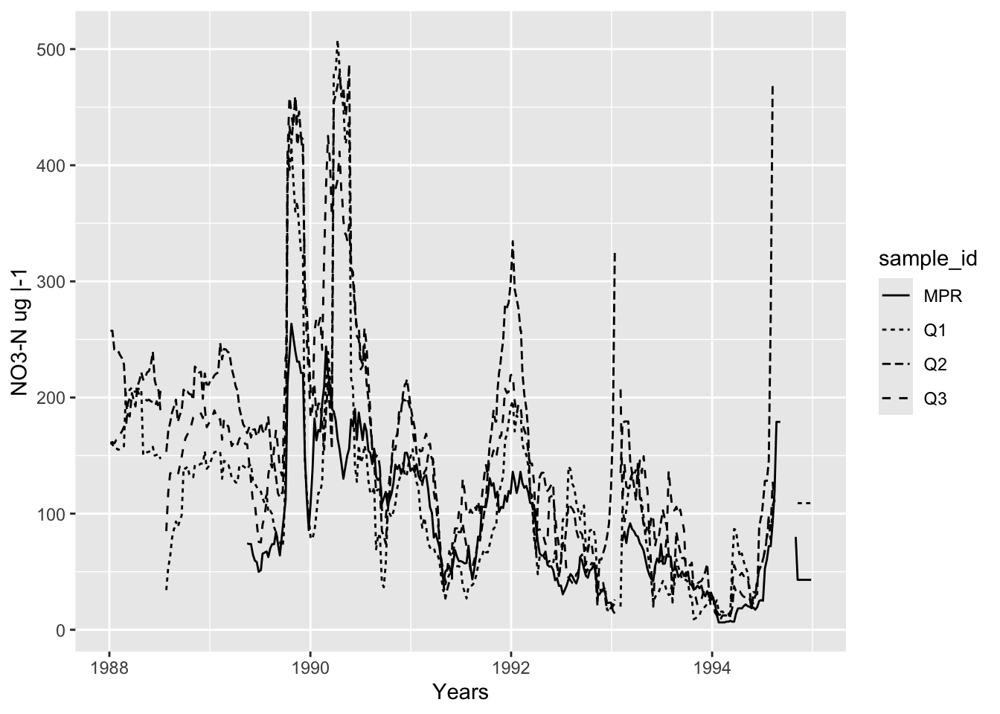
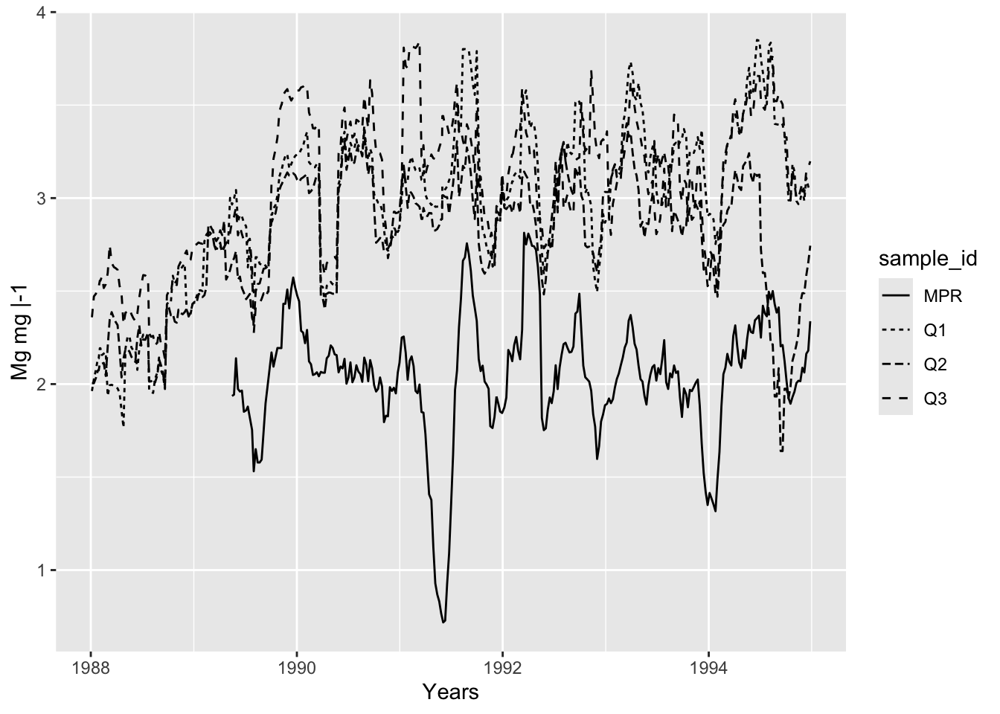
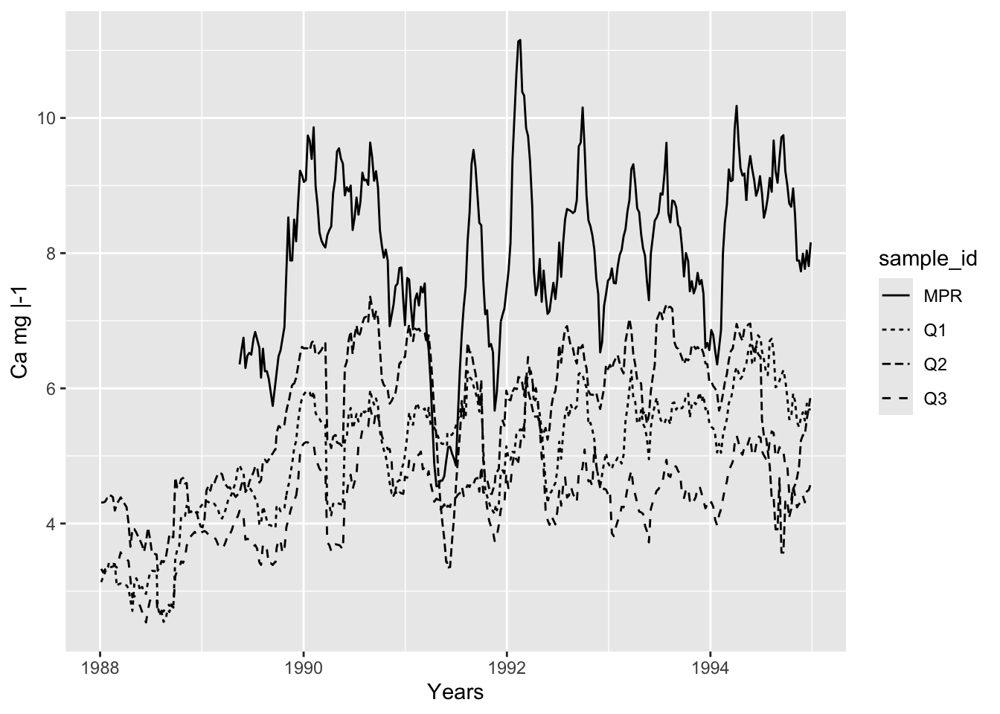
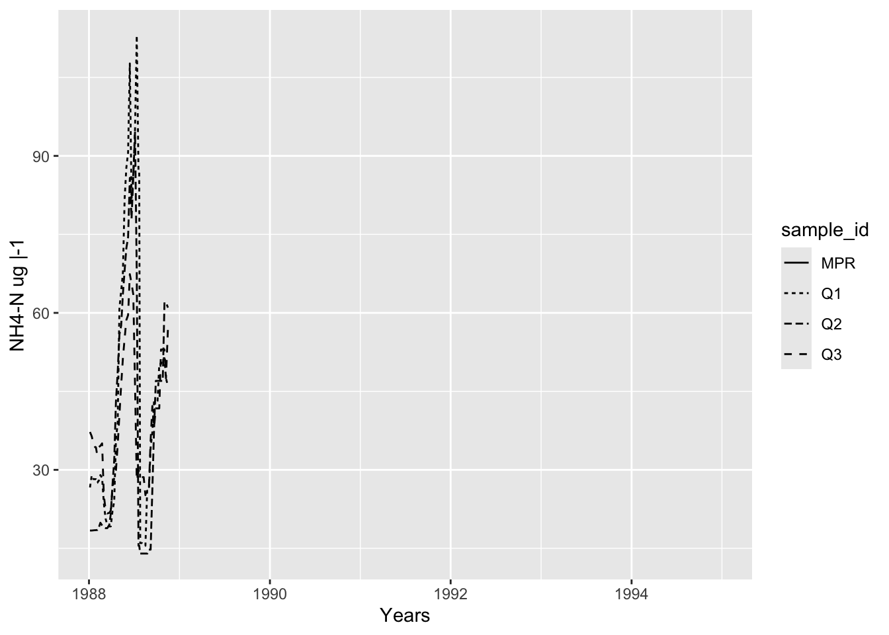

── Attaching core tidyverse packages ─────────────────── tidyverse 2.0.0.9000 ──
✔ dplyr 1.1.4 ✔ readr 2.1.5
✔ forcats 1.0.0 ✔ stringr 1.5.1
✔ ggplot2 3.5.2 ✔ tibble 3.3.0
✔ lubridate 1.9.4 ✔ tidyr 1.3.1
✔ purrr 1.1.0
── Conflicts ────────────────────────────────────────── tidyverse_conflicts() ──
✖ dplyr::filter() masks stats::filter()
✖ dplyr::lag() masks stats::lag()
ℹ Use the conflicted package (<http://conflicted.r-lib.org/>) to force all conflicts to become errors
here() starts at /Users/sofiarodas/Documents/MEDS/Summer/EDS-214/eds214-chemistry-of-stream-water-loquillo-mountains
Attaching package: 'janitor'
The following objects are masked from 'package:stats':
chisq.test, fisher.test
Attaching package: 'zoo'
The following objects are masked from 'package:base':
as.Date, as.Date.numericpaper
Background
Data
#read in data
bq1_data <- read_csv(here::here("data", "QuebradaCuenca1-Bisley.csv")) |>
clean_names() |>
select(sample_id, sample_date, k, no3_n, mg, ca, nh4_n)Warning: One or more parsing issues, call `problems()` on your data frame for details,
e.g.:
dat <- vroom(...)
problems(dat)Rows: 1847 Columns: 39
── Column specification ────────────────────────────────────────────────────────
Delimiter: ","
chr (8): Sample_ID, NitrateCode, SulfateCode, NH4Code, PO4Code, DOCCode, T...
dbl (21): Code, Sample_Time, Gage_Ht, Temp, pH, Cond, Cl, NO3-N, SO4-S, Na,...
lgl (9): TDP, ChlorideCode, SodiumCode, PotassiumCode, MagnesiumCode, Calc...
date (1): Sample_Date
ℹ Use `spec()` to retrieve the full column specification for this data.
ℹ Specify the column types or set `show_col_types = FALSE` to quiet this message.bq2_data <- read_csv(here::here("data", "QuebradaCuenca2-Bisley.csv")) |>
clean_names() |>
select(sample_id, sample_date, k, no3_n, mg, ca, nh4_n)Rows: 1838 Columns: 39
── Column specification ────────────────────────────────────────────────────────
Delimiter: ","
chr (9): Sample_ID, NitrateCode, SulfateCode, PotassiumCode, NH4Code, PO4C...
dbl (21): Code, Sample_Time, Gage_Ht, Temp, pH, Cond, Cl, NO3-N, SO4-S, Na,...
lgl (8): TDP, ChlorideCode, SodiumCode, MagnesiumCode, CalciumCode, DICCod...
date (1): Sample_Date
ℹ Use `spec()` to retrieve the full column specification for this data.
ℹ Specify the column types or set `show_col_types = FALSE` to quiet this message.bq3_data <- read_csv(here::here("data", "QuebradaCuenca3-Bisley.csv")) |>
clean_names() |>
select(sample_id, sample_date, k, no3_n, mg, ca, nh4_n)Rows: 1835 Columns: 39
── Column specification ────────────────────────────────────────────────────────
Delimiter: ","
chr (9): Sample_ID, NitrateCode, SulfateCode, NH4Code, PO4Code, DOCCode, T...
dbl (21): Code, Sample_Time, Gage_Ht, Temp, pH, Cond, Cl, NO3-N, SO4-S, Na,...
lgl (8): TDP, ChlorideCode, SodiumCode, PotassiumCode, MagnesiumCode, Calc...
date (1): Sample_Date
ℹ Use `spec()` to retrieve the full column specification for this data.
ℹ Specify the column types or set `show_col_types = FALSE` to quiet this message.prm_data <- read_csv(here::here("data", "RioMameyesPuenteRoto.csv")) |>
clean_names() |>
select(sample_id, sample_date, k, no3_n, mg, ca, nh4_n)Rows: 1657 Columns: 39
── Column specification ────────────────────────────────────────────────────────
Delimiter: ","
chr (8): Sample_ID, NitrateCode, SulfateCode, NH4Code, PO4Code, TDNCode, S...
dbl (21): Code, Sample_Time, Gage_Ht, Temp, pH, Cond, Cl, NO3-N, SO4-S, Na,...
lgl (9): TDP, ChlorideCode, SodiumCode, PotassiumCode, MagnesiumCode, Calc...
date (1): Sample_Date
ℹ Use `spec()` to retrieve the full column specification for this data.
ℹ Specify the column types or set `show_col_types = FALSE` to quiet this message.#join data frames
compiled_data <- rbind(bq1_data, bq2_data, bq3_data, prm_data)
#clean names for easier reference to names
compiled_data <- compiled_data |> clean_names()
#filter data for necessary columns
compiled_data <- compiled_data |>
select(sample_id, sample_date, k, no3_n, mg, ca, nh4_n) |>
filter(sample_date >= "1988-01-05",
sample_date <= "1994-12-27")Methods
#calculating 9 day moving average using mutate and group by
mov_avg_k <- compiled_data |>
group_by(sample_id) |> #group by sample sites
#mutating to create a new column
mutate(mov_avg_k = sapply(sample_date, #sapply to run on all of the data
moving_average,
sample_date = sample_date,
nutrient_conc = k,
win_size_wks = 9)) |>
#selecting for just necessary data to create a plot
select(sample_id, sample_date, k, mov_avg_k)
#calculating 9 day moving average using mutate and group by
mov_avg_mg <- compiled_data |>
group_by(sample_id) |> #group by sample sites
#mutating to create a new column
mutate(mov_avg_mg = sapply(sample_date, #sapply to run on all of the data
moving_average,
sample_date = sample_date,
nutrient_conc = mg,
win_size_wks = 9)) |>
#selecting for just necessary data to create a plot
select(sample_id, sample_date, mg, mov_avg_mg)
#calculating 9 day moving average using mutate and group by
mov_avg_no3_n <- compiled_data |>
group_by(sample_id) |> #group by sample sites
#mutating to create a new column
mutate(mov_avg_no3_n = sapply(sample_date, #sapply to run on all of the data
moving_average,
sample_date = sample_date,
nutrient_conc = no3_n,
win_size_wks = 9)) |>
#selecting for just necessary data to create a plot
select(sample_id, sample_date, no3_n, mov_avg_no3_n)
#calculating 9 day moving average using mutate and group by
mov_avg_ca <- compiled_data |>
group_by(sample_id) |> #group by sample sites
#mutating to create a new column
mutate(mov_avg_ca = sapply(sample_date, #sapply to run on all of the data
moving_average,
sample_date = sample_date,
nutrient_conc = ca,
win_size_wks = 9)) |>
#selecting for just necessary data to create a plot
select(sample_id, sample_date, ca, mov_avg_ca)
#calculating 9 day moving average using mutate and group by
mov_avg_nh4_n <- compiled_data |>
group_by(sample_id) |> #group by sample sites
#mutating to create a new column
mutate(mov_avg_nh4_n = sapply(sample_date, #sapply to run on all of the data
moving_average,
sample_date = sample_date,
nutrient_conc = nh4_n,
win_size_wks = 9)) |>
#selecting for just necessary data to create a plot
select(sample_id, sample_date, nh4_n, mov_avg_nh4_n)Results
# ggplot of the rollmean average k
ggplot(data = mov_avg_k, aes(x = sample_date, y = mov_avg_k, linetype = sample_id)) +
geom_line() +
labs(x = "Years",
y = "K mg |-1")
# ggplot of the rollmean average NO3_N
ggplot(data = mov_avg_no3_n, aes(x = sample_date, y = mov_avg_no3_n, linetype = sample_id)) +
geom_line() +
labs(x = "Years",
y = "NO3-N ug |-1")Warning: Removed 38 rows containing missing values or values outside the scale range
(`geom_line()`).
# ggplot of the rollmean average NO3_N
ggplot(data = mov_avg_mg, aes(x = sample_date, y = mov_avg_mg, linetype = sample_id)) +
geom_line() +
labs(x = "Years",
y = "Mg mg |-1")
# ggplot of the rollmean average NO3_N
ggplot(data = mov_avg_ca, aes(x = sample_date, y = mov_avg_ca, linetype = sample_id)) +
geom_line() +
labs(x = "Years",
y = "Ca mg |-1")
# ggplot of the rollmean average NH4_N
ggplot(data = mov_avg_nh4_n, aes(x = sample_date, y = mov_avg_nh4_n, linetype = sample_id)) +
geom_line() +
labs(x = "Years",
y = "NH4-N ug |-1")Warning: Removed 1316 rows containing missing values or values outside the scale range
(`geom_line()`).